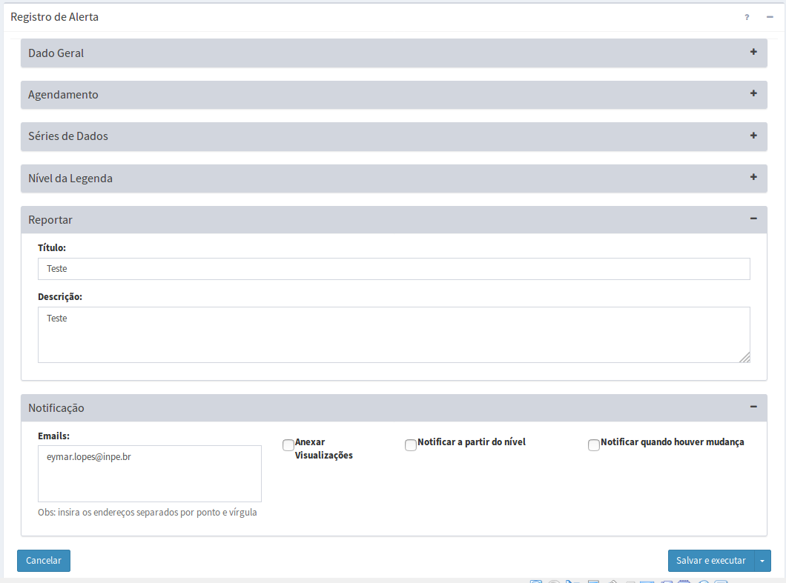

Adicionar Alerta
Para adicionar um novo alerta é necessário ter um projeto ativo. No menu de opções selecione “ Alertas” para que a lista de alertas e legendas sejam apresentadas na área de trabalho. Clique na aba “Alertas” e em seguida no botão “ + “ para adicionar novo alerta. Após preencher todos os campos utilize o botão “Salvar”. Não é permitido nomes de alertas em duplicidade. Botão “Cancelar” volta à tela anterior sem salvar o alerta. A Figura 4.8 mostra a área de trabalho para adicionar novo alerta. Detalhes de cada campo a seguir.
Alertas” para que a lista de alertas e legendas sejam apresentadas na área de trabalho. Clique na aba “Alertas” e em seguida no botão “ + “ para adicionar novo alerta. Após preencher todos os campos utilize o botão “Salvar”. Não é permitido nomes de alertas em duplicidade. Botão “Cancelar” volta à tela anterior sem salvar o alerta. A Figura 4.8 mostra a área de trabalho para adicionar novo alerta. Detalhes de cada campo a seguir.

Figura 4.8 – Módulo de Administração: parâmetros de novo alerta.
Registro de Alerta – Dado Geral:
- Nome: Defina o nome do alerta. O tamanho máximo do nome é de 100 caracteres.
- Serviço: Escolha o serviço disponível no botão associado.
- Ativo: Por padrão um novo alerta estará ativo. Se desejar desativar um alerta desmarque este botão, neste caso o serviço associado a este alerta não será executado.
- Descrição: Campo não obrigatório para descrição do serviço. O tamanho máximo da senha é de 250 caracteres.
- Criar Visualização: Marque esta opção se desejar que o alerta seja publicado no Módulo de Monitoramento.
- Serviço de Visualização: Escolha o serviço que irá publicar o alerta no Módulo de Monitoramento.
- Privado: Marque esta opção para visualizações que exigirão acesso restrito a usuários no Módulo de Monitoramento, portanto, login e senha serão solicitados. Se opção desabilitada, a camada estará disponível no projeto correspondente.
Registro de Alerta – Agendamento:
- Tipo: Escolha tipo “Manual”, “Agendamento” ou “Automático”. Se “Manual” o alerta só será executado se o usuário utilizar o botão
 Executar na lista de alertas do item desejado ou salvar com opção de executar. Se “Agendamento” preencha os campos abaixo. Se “Automático” dependerá de um novo dado dinâmico ou análise ter sido realizada.
Executar na lista de alertas do item desejado ou salvar com opção de executar. Se “Agendamento” preencha os campos abaixo. Se “Automático” dependerá de um novo dado dinâmico ou análise ter sido realizada. - Unidade de tempo (somente se Tipo for Agendamento): Escolha um item entre “Segundos, Minutos, Horas e Semanalmente”.
- Frequência (somente se Unidade de tempo for Segundos, Minutos, Horas): Digite um valor de um número inteiro ou fracionado.
- Tempo Inicial
 (somente se Unidade de tempo for Segundos, Minutos, Horas): Clique no campo para escolher o valor de hora, minuto e segundo que será utilizado como referência para executar a visualização.
(somente se Unidade de tempo for Segundos, Minutos, Horas): Clique no campo para escolher o valor de hora, minuto e segundo que será utilizado como referência para executar a visualização. - Agendamento (somente se Unidade de tempo for Semanalmente): escolha uma das opções entre “Domingo, Segunda-feira, Terça-feira, Quarta-feira, Quinta-Feira, Sexta-feira e Sábado”
- Hora
 (somente se Unidade de tempo for Semanalmente): clique no campo para escolher o valor de hora, minuto e segundo que será executada a visualização.
(somente se Unidade de tempo for Semanalmente): clique no campo para escolher o valor de hora, minuto e segundo que será executada a visualização.
Registro de Alerta – Série de Dados:
- Série de Dados: Escolha o dado dinâmico matricial ou resultado de uma análise.
- Atributo da Legenda (somente se análise de PCD ou Objeto Monitorado): Digite ou escolha o nome do atributo que foi utilizado para armazenar o resultado de algum cálculo de uma análise com PCD ou Objeto Monitorado. Deve ser o mesmo nome utilizado com o utilitário “add_value” no modelo de análise.
- Banda da Legenda (somente se dado matricial dinâmico, resultado de análise com grades ou de interpolação de PCD´s): Digite o número da banda do dado matricial. Lembre-se a primeira banda é a de número 0.
Registro de Alerta – Nível da Legenda
Nesta seção poderá escolher uma legenda definida no procedimento acima, podendo alterar uma legenda escolhida ou ainda criar uma legenda para o alerta corrente que estará disponível para outros alertas. Os mesmos procedimentos a seguir estão disponíveis na aba “Alertas” descrita acima.
- Legendas: Escolha uma legenda previamente definida ou use a opção “Nova Legenda” para preencher os campos abaixo.
- Nome da Legenda: Defina o nome da legenda. O tamanho máximo do nome é de 100 caracteres. Não é permitido nomes em duplicidade.
- Descrição da Legenda: Campo não obrigatório para descrição da legenda. O tamanho máximo da senha é de 250 caracteres.
- Nome do Nível Padrão: O nível “Default” não tem valor associado pois é utilizado para valores fora do intervalo dos demais níveis.
- Nome do Nível: Defina o nome do primeiro nível de menor criticidade.
- Valor da Legenda: Defina o valor da legenda do primeiro nível. Este valor abrange os valores menores ou iguais ( < = ) em relação ao atributo da legenda (se o alerta for a partir de uma análise por objeto monitorado) ou da banda da legenda (se dado matricial dinâmico ou resultado de análise do tipo Grade)
- Novo Nível: Clique no botão para adicionar novo nível. Preencha os campos de Nome do Nível e Valor da Legenda na ordem crescente de criticidade. Este novo valor abrange os valores maiores ( > ) e menores ou iguais ( < = ) em relação ao atributo ou banda da legenda.
Nota: Adicione quantos níveis da legenda de alerta for utilizar. É obrigatório o preenchimento do Nome do Nível e Valor da Legenda sempre de forma crescente. Valores do atributo ou da banda da legenda acima do último nível informado serão incluídos no valor padrão (“Default”).
- Cor (somente se selecionada opção “Criar Visualização” acima): Para cada item da legenda clique para escolher uma cor. A cor definia será armazenada para cada alerta criado.
Registro de Alerta – Reportar
- Título: Defina o título a ser incluído no relatório a ser enviado e por email assim como no PDF criado. O tamanho máximo do nome é de 100 caracteres.
- Descrição: Campo não obrigatório para descrição do serviço. O tamanho máximo da senha é de 250 caracteres.
Registro de Alerta – Notificação
- Emails: Digite o endereço de e-mail das pessoas ou instituições que receberão mensagens automaticamente. É obrigatório digitar pelo menos um endereço válido e os demais separados por ponto e vírgula.
- Anexar Visualizações: Marque esta opção para permitir anexar figuras ao e-mail ou relatório em PDF gerado (veja detalhes abaixo).
- Notificar a partir do nível: Marque esta opção se deseja limitar a quantidade de e-mails enviados. Neste caso, escolha o nome de um item da legenda que foi definido acima. Somente será enviada notificação de algum objeto da análise atingir o valor escolhido ou se houver valores de uma grade (dado matricial) que alcance o nível da legenda. Se não marcado esse item sempre irá enviar uma notificação.
- Notificar quando houver mudança: Marque esta opção se deseja limitar a quantidade de e-mails enviados. Neste caso, se marcado somente será enviado notificação de aumentar ou diminuir o nível de alerta de um objeto.
Registro de Alerta – Anexar Visualizações
Nesta seção deve-se definir a janela (um retângulo definido pela par de coordenadas) utilizada para criar a imagem a ser anexada ao e-mail ou relatório. Normalmente, será a mesma área do mapa do objeto monitorado.
- X min: Digite o valor mais à esquerda da área de saída. Valor depende do sistema de projeção utilizado.
- Y min: Digite o valor mais abaixo da área de saída. Valor depende do sistema de projeção utilizado.
- X max: Digite o valor mais à direita da área de saída. Valor depende do sistema de projeção utilizado.
- Y max: Digite o valor ponto mais à cima da área de saída. Valor depende do sistema de projeção utilizado.
- Projeção (SRID): Valor numérico dos parâmetros de projeção e datum a ser utilizado pelo par de coordenadas e resolução acima. Veja os principais valores utilizados no anexo A1.
Exemplo: Para sistemas de coordenadas geográficas utilize o valores em graus decimais (-23.43, –45.22) para longitude e latitude, e para sistema de coordenadas projetados utilize os valores em metros (345455.32, 7455432.43).
- “ + ”: Utilize este botão para adicionar novas camadas a serem desenhadas junto da camada da análise ou dado dinâmico. Após escolher as camadas, se necessário poderá alterar a ordem de sobreposição das camadas. As camadas superiores ficarão por cima das demais.